Python / PyTorch / Signal processing
ECG Identification
从一段心电信号出发，探索人体自身的身份特征。结合信号处理与轻量 CNN 的心电身份识别实验。

当前形态：标识 7。
我用 AI 写代码，也用代码追问 AI 的可能性。
把信号变成理解，把意图变成行动，
把一个奇怪的念头，做成你能亲手试试的东西。
作品不是终点，是好奇心的坐标。
Python / PyTorch / Signal processing
从一段心电信号出发，探索人体自身的身份特征。结合信号处理与轻量 CNN 的心电身份识别实验。
有趣的事情，往往从一次交流开始。